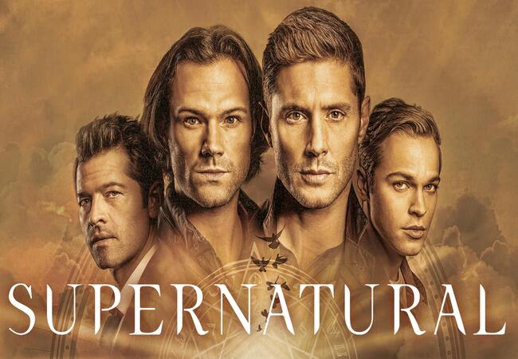
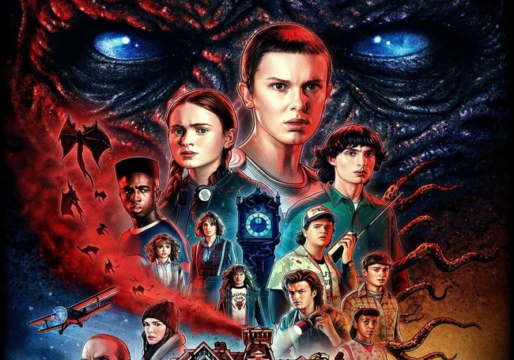
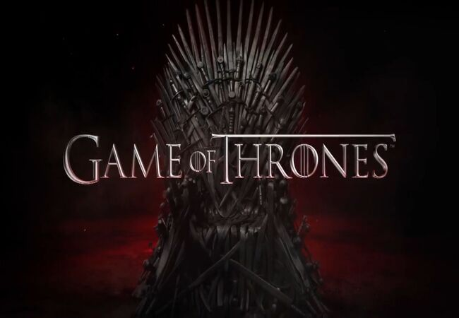

Série em Destaque: Supernatural
Acompanhe os irmãos Winchester em sua jornada para caçar demônios, fantasmas, monstros e outras criaturas sobrenaturais. Uma série de longa duração que mistura terror, ação e momentos emocionantes, criando um universo complexo e cativante.

Série em Destaque: Stranger Things
Situada na década de 1980, "Stranger Things" combina elementos de ficção científica, terror e nostalgia. A série acompanha um grupo de crianças e adolescentes que descobrem um mundo paralelo, o 'Mundo Invertido', enquanto enfrentam criaturas monstruosas e uma conspiração governamental.

Série em Destaque: Game of Thrones
Baseada na série de livros "As Crônicas de Gelo e Fogo" de George R.R. Martin, "Game of Thrones" é uma saga épica que retrata a luta pelo poder entre as famílias nobres dos Sete Reinos de Westeros. Com intrigas políticas, batalhas épicas e personagens complexos, a série se tornou um fenômeno mundial.